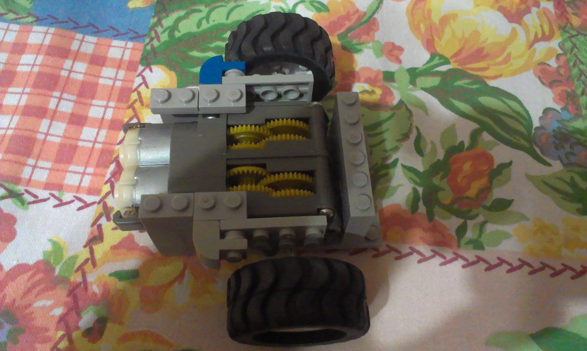
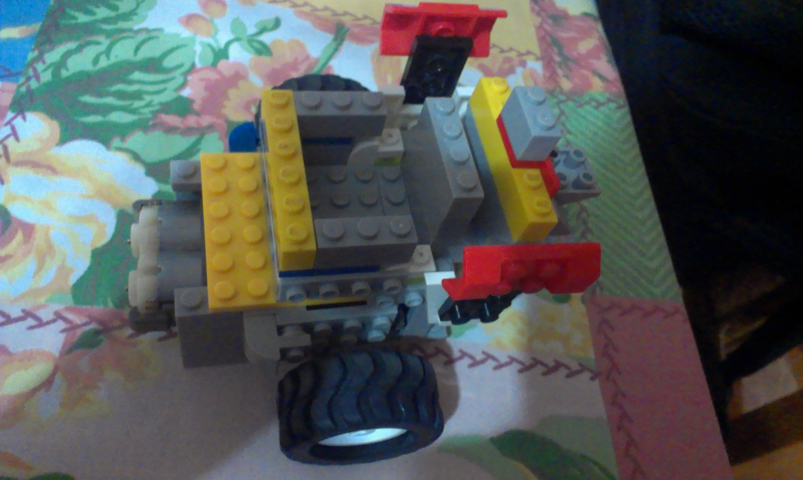
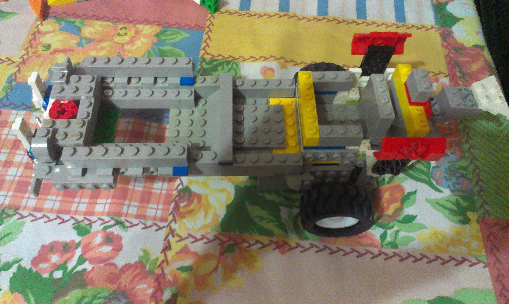
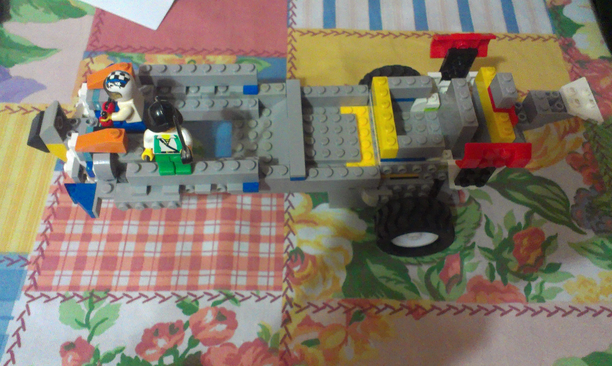
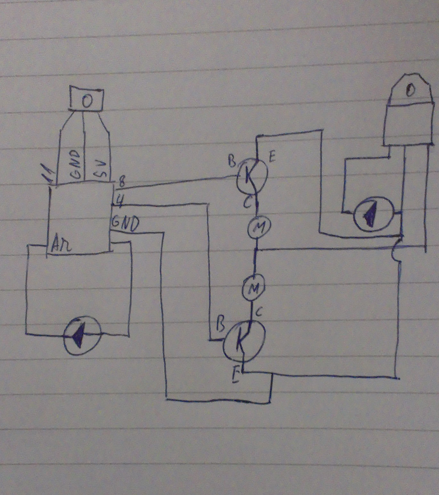

Primul pas a fost sa pun piesele LEGO in jurul cutiei de viteze astfel încât aceasta sa fie fixata

Am acoperit cutia de viteze

Am pus restul caroseriei, având grijă sa fac suport pentru placă, breadboard, și baterii

Am mai adaugat câteva piese pentru design

Iar în ultima parte am pus piesele de circuit conform schiței, după care tot ce mai ramâne de făcut este să incarc codul sursă
